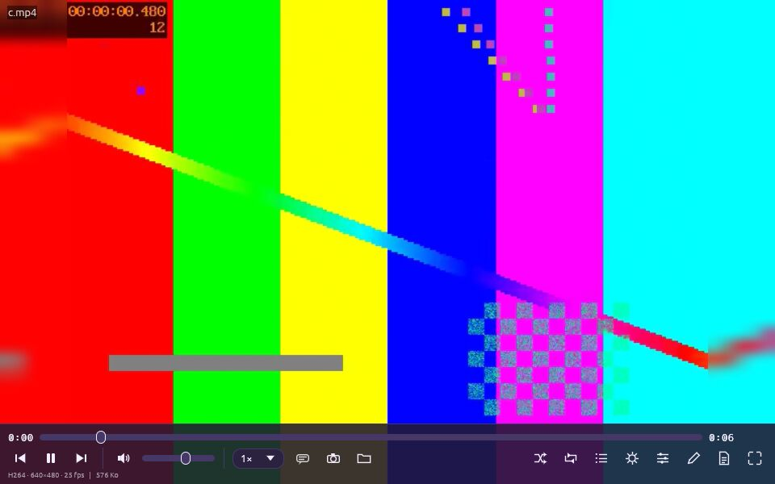

▶️ Player
Lecteur audio, vidéo et images (libmpv). MediaForge Player lit pratiquement tous les formats, accélère le décodage avec le GPU et ajoute des outils de professionnel : derushage, timecode, pipette, mode cinéma.
Lecture et commandes #
Ouvrez un fichier par glisser-déposer, clic droit, la touche O ou le bouton dossier. Par défaut, les autres fichiers du dossier sont chargés dans la liste de lecture.

- Espace lecture/pause ; ←/→ ±5 s (avec Ctrl ±30 s) ; ↑/↓ volume ; M muet.
- F ou F11 plein écran ; N/P ou PgSuiv/PgPréc : fichier suivant/précédent ; [ ] vitesse.
- Menu 1× : vitesse de lecture. Bulle de dialogue : pistes audio et sous-titres (avec Charger un sous-titre…).
- Appareil photo (S) : capture de l'image courante. Dossier : Enregistrer le média (utile pour un flux ou un direct).
- Pour les images : + − 0 1 zoom, R pivoter, diaporama, copier l'image ; pour les PDF : pages précédente/suivante.
- Liste de lecture (L) avec lecture aléatoire et répétition ; glissez-y des fichiers pour les ajouter.
Mode cinéma (bords flous) #
Quand le format de la vidéo n'est pas celui de l'écran (4:3 sur un écran 16:9, vidéo verticale…), le mode cinéma remplit les bandes noires par une version floutée et en miroir des bords de l'image.
- Appuyez sur C en cours de lecture, ou cochez l'option dans Réglages.
- Réglez Flou des bords (0 = bords nets).
- Désactivez avec C pour retrouver les bandes noires.
Derushage (timecode et annotations) #
Le derushage sert à visionner des rushes en repérant les instants importants. Le lecteur peut afficher un timecode en surimpression et vous laisser annoter chaque moment.
- T : affiche le timecode SMPTE en surimpression. Dans Réglages › Derushage : numéro d'image, temps restant, position et taille.
- A : annote l'instant courant (texte de 100 caractères max, durée d'affichage réglable).
- J : ouvre la liste des notes ; cliquez sur un timecode pour y aller.
- Les notes sont enregistrées dans un fichier
.notes.txtà côté de la vidéo.
Fenêtre des notes de derushage #
La fenêtre Notes de derushage (touche J ou bouton document) liste toutes les annotations d'un fichier.
- Ouvrez-la avec J.
- Cliquez sur un timecode pour sauter à cet instant.
- Ajoutez une note à l'instant courant avec + Note ici (A) ; réglez la durée par défaut d'affichage.
Pipette de couleur #
La pipette affiche le code couleur de la zone survolée ; un clic le copie dans le presse-papiers.
- Appuyez sur I pour activer la pipette.
- Survolez l'image : la couleur et son code s'affichent.
- Cliquez : le code est copié. Formats au choix dans Réglages :
#RRGGBB,rgb(r, g, b)ou les deux.
#254193).Démarrage avec Windows et résidence en mémoire #
Pour ouvrir les vidéos instantanément, le lecteur peut rester en mémoire (réduit) quand vous fermez la fenêtre, et démarrer avec Windows.
- Dans Réglages, cochez Rester en mémoire à la fermeture.
- Cochez Démarrer avec Windows (réduit) pour un lancement automatique.
- Pour quitter vraiment : Ctrl+Q.
--minimized lance le lecteur réduit.Associer les formats de fichiers #
Le bouton Associer les formats… (Windows) prépare l'association des fichiers audio et vidéo et ouvre les « Applications par défaut » de Windows.
- Ouvrez Réglages et cliquez sur Associer les formats….
- Dans la fenêtre Windows qui s'ouvre, choisissez MediaForge Player pour les types voulus.